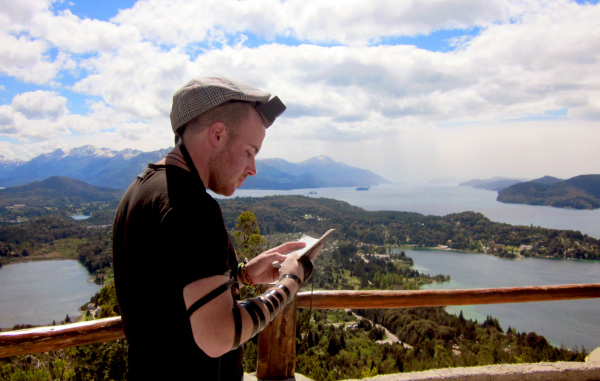

770 Meters Above Sea Level
Rabbi Boaz Klein and his wife Fraidy, the Rebbe MH”M’s shluchim in Bariloche, Argentina, work with tens of thousands of Jewish tourists from around the world who come to this magical South American paradise. Rabbi Klein tells Beis Moshiach about his activities there.

A chain of high and snowy mountains encircle the tourist city of Bariloche, Argentina. As the sun sets, a yellow halo of light mixes with the deep blue skies. The clear water of Nahuel Huapi Lake breaks along the pier, as the clouds and the lake turn bright red.
Bariloche is Argentina’s ultimate tourist city. Tens of thousands of tourists from all over the world come here each year. This city offers visitors a magical combination of stunningly breathtaking views, reasonable prices, and a long list of attractions that make it a very popular vacation spot. Bariloche is also considered the official capital of the Argentinian lake region. The city and its surrounding area are filled with dazzling lakes, snowy mountain peaks, and magnificent green forests.
“This is the most prominent tourist city in Argentina,” says Rabbi Boaz Klein, the Rebbe MH”M’s shliach in Bariloche for the past five years. “Tourists call it ‘the Switzerland of South America,’ due to its lofty snow-capped mountains.”
Bariloche was founded more than a hundred years ago by several German and Austrian families who emigrated there from their native countries, seeking to make a new life in a distant land. As a result, after the Second World War, the city also absorbed a large number of Nazi war criminals who fled to Argentina to escape international justice. “The Chabad House’s first building had previously served as a German kindergarten with a Nazi flag flying from its balcony.”
Rabbi Klein tells us that while the German presence is definitely felt throughout the city, it doesn’t seem to trouble him. The Bariloche Chabad House is one of the busiest Chabad centers on the continent of South America. About ten thousand Israelis visit here each year, and the Chabad house provides kosher food, outreach activities, a mikveh, a synagogue with regular prayer services, and plenty of one-on-one discussions. “This is the most remote city on the continent – Israeli tourists either start or conclude their journey here.”
THE REBBE ANSWERS IMMEDIATELY
Rabbi Boaz Klein and his wife, Fraidy, arrived in Bariloche in late Menachem Av 5769. “After months of preparation, we packed our suitcases and bought two airline tickets to Argentina, with a stop in New York to visit 770. Along the way, we experienced several amazing cases of Divine Providence, making it quite clear that we were not setting out on this shlichus with our own strengths, but with those of the Rebbe, Melech HaMoshiach, accompanying us at every step.”
Even during their week-long stay in Beis Chayeinu, the Hand of Alm-ghty G-d continued to guide the young shluchim. “After drawing much spiritual strength from the Tree of Life, we flew to Buenos Aires, where we met with the head shliach, Rabbi Tzvi Grunblatt. From there we took a direct flight to Bariloche.”
Rabbi Klein describes those first days as constant activity, as he and his wife had no time to digest what was happening. “On that very first Shabbos we hosted about fifty tourists. This was immediately followed by the High Holidays and the joyous season of Sukkos and Simchas Torah. At the central Chanukah menorah lighting during that first year, about five hundred tourists participated. With that number of people taking part, who has time to stop and balance the books?”
Despite the intensive activities, the shluchim had their fair share of bumps along the way. “After our first year of shlichus, it turned out that the facility we were using was subject to a demolition order. A multi-story building was being constructed nearby, and this apparently resulted in a weakening of the foundations on our structure. The municipal authorities turned off the electricity and gas. We couldn’t stay there, so we took up residence in a local hotel. Our activities came to a standstill over the next two weeks. We went out in search of an alternative location. We made numerous offers, but we still hadn’t found a suitable building. We were getting desperate.
“We then traveled to Bahia Blanca to spend Shabbos with the local shluchim, Rabbi and Mrs. Moshe Freedman. Rabbi Freedman told us how they had arrived on their shlichus thirty years earlier. They spent six months living in a hotel from where they organized their outreach activities. A few days after writing a heartfelt letter to the Rebbe explaining the situation, they received a most encouraging reply. That very same day, they found an appropriate facility for the Chabad House.
“On Motzaei Shabbos we wrote a letter to the Rebbe in request of a bracha, and placed it in a volume of Igros Kodesh.
“What happened afterward was nothing less than amazing. A few hours later, we received a phone call from a real estate agent in Bariloche, who told us that she had two buildings for us. When we returned home we couldn’t believe our eyes: each building was in excellent condition and appropriate for our needs. All we had to do was choose one of them.”
According to Rabbi Klein, the Chabad house encountered numerous difficulties during its initial stages of operations. Working with hundreds of people each week demanded a sizable budget. “During our first year in Bariloche, we had a Shabbos when we had ordered a large quantity of flour for making challos, but we had no way of paying for it. We had no credit card at the time, and we tried several methods of raising the necessary funds. After all our efforts proved unsuccessful, we were hoping for a miracle.
“On Friday, at five o’clock in the morning, we woke up with a start to the sound of someone pounding at the front door. We had no idea who could possibly be coming at such an early hour. When I opened the door I saw an Israeli in his thirties, asking for some bread. He had come to me because he didn’t want to eat anything that wasn’t Pas Yisroel.
“It took me a few minutes to absorb this peculiar request first thing in the morning. Nevertheless, my wife quickly arose and told him to come back at eight o’clock for some fresh rolls… With great dedication, she passed up on some much needed rest, washed negel vasser, said Brachos, gathered up the little flour we had, and baked some rolls. When the man came back at eight in the morning he had some fresh hot rolls waiting for him.
“When he asked how much he should pay, I replied that he should give a donation for as much as he wants. While we were still talking, the delivery truck arrived with the flour. The driver unloaded the sacks we had ordered, and then handed us the bill for payment. The Israeli took the bill and paid the full amount himself… When the truck driver and the Israeli left, I remained frozen in my place, stunned by the Divine Providence that had just occurred before my very eyes. This was literally a Baal Shem’ske Maaseh…”
BRINGING A JEWISH SOUL TO ITS ETERNAL REST
During the first months after the arrival of the shluchim in Bariloche, the Chabad House still didn’t have a regular telephone line, a mobile phone, or even Internet. On the day that his mobile phone become operational, he quickly put up an announcement on the Chabad House’s front door with his new phone number. He also updated the various Chabad websites with the same information.
“The next day, at four o’clock in the morning, the telephone rang. I woke up, washed negel vasser, and asked who it was. I heard someone speaking in Spanish, the local language. Since I had yet to become proficient in Spanish, I wasn’t certain what he wanted from me, and I had to break my teeth in order to understand him. After much trial and effort, I realized that he was standing outside by the door, and I went out to greet him. There were several people waiting at the doorstep; they told me about their aunt who had married a Gentile, a South American Indian, and lived in a remote village over a hundred and twenty miles from Bariloche. She had suddenly passed away the night before, and their grandmother from Buenos Aires had sent them to me to make certain that the deceased’s husband didn’t cremate her body in a funeral pyre, as was customary in that region.
“I wasted no valuable time. I grabbed a pair of t’fillin, told my wife where I was going, and set out on my journey. After traveling for several hours along long and winding roads, we arrived in the city of El Bolson. It turns out that this city was once a gathering place for hippies and beatniks of all types. Among those it attracted was this Jewish woman, then in search of her identity. She met a local Gentile there and r”l married him. Since she was a trained doctor, she became the village’s medical caregiver.
“Along with two of the woman’s nephews, residents of Bariloche, I stood at the door of their house. We tried to speak to the Gentile’s heart, begging him not to burn his wife’s body. However, this Indian was extremely stubborn about adhering to the traditions of his own ancestors. ‘If you bury her in any city in Argentina, I’ll come there, remove her body from the grave and burn it,’ he promised us at the outset. Yet, we would not relent. The grandmother from Buenos Aires was on the phone with us throughout all these negotiations, and she was determined that her daughter receive a Jewish burial. However, the husband was no less determined, and regrettably, Argentine law gave him the authority in this matter. Thus, all the pressure and threats in the world would not change his mind.
“During the long hours we waited in the courtyard, I was shocked to see the Indian husband laughing cheerfully, as if he had suffered no tragic loss. The story of this woman and her mother from Buenos Aires chilled me to the bone. The latter was the last surviving member of a Satmar Chassidic family wiped out in the Holocaust. She was a woman of very strong character, and as soon as she had arrived in Argentina, she severed all connection to Torah and mitzvos. She established several factories, making her family extremely wealthy.
“While she was no longer Torah observant, nevertheless, the lack of a proper Jewish burial was a red line she was unwilling to cross. Her daughter’s Hebrew name was Chana Leah, and I was stunned to see her grandchildren, born with a typical Indian appearance, who knew nothing about their grandmother’s Jewish heritage or their own. The only Yiddishe thing they knew was to call their grandmother ‘Bubby’. The negotiations with this vile idolater went on for hours, well into the evening. Finally, it appeared that he had decided to make a concession.
“After much pleading on my part, adding a few blessings for him along the way, he agreed not to burn his Jewish wife’s body. However, there was one condition: the burial would take place in the village, not in Buenos Aires. In constant contact with Rabbi Tzvi Grunblatt, who guided me every step of the way, I learned for the first time the laws of Jewish tahara and burial. The local ritual was for the villagers to part from the deceased after the body had been cremated. However, due to our efforts and urgent appeals, they parted from her while she was whole, and after the tahara we had done.
“Now, the question was: Where could I find a minyan? I thought to myself for a moment, and then I suddenly remembered that I had heard about an Israeli farm located nearby. The problem was that I knew that the people there spent most of their time smoking hallucinogens. I chose not to give the matter too much thought, especially after the Gentile had agreed to bury his wife as a Jew. I quickly drove over to the farm, and asked the people there to join me. Eight Jewish men got into my vehicle without saying a word; they were all high on drugs. Together, we quickly made our way back to the Indian village.
“As soon as we got there, the drugs started wearing off, and the Israelis slowly came back to their senses. They made our minyan, and the woman was laid to rest. The burial took place in the same cemetery with non-Jews, so we marked her grave off from the others and placed a fence around it. The funeral ceremony was very moving. We cried out ‘Shma Yisroel,’ and I recited the Twelve P’sukim together with the Jewish children and grandchildren. They even said Kaddish. In the merit of these Israelis, this Jewish woman was privileged to have a Jewish burial. Afterwards, I realized that the Israelis’ presence on the nearby farm was another amazing case of Divine Providence, as they comprised the minyan to pray for her soul.
“I returned home that night, totally exhausted but very satisfied. As a result of this story, the connection with the woman’s nephews living in Bariloche grew stronger. They would periodically come to the Chabad House to say Kaddish in their aunt’s memory. One nephew, who was very close to his grandmother and had been a part of the story since it began back in Buenos Aires, did t’shuva and become a Lubavitcher Chassid. I later heard that the whole family had started coming to his home for the Jewish holidays. Even the wall of spiritual alienation erected by the grandmother, the deceased woman’s mother, had been breached as a result of this story. It led the entire family to go through a process of kiruv.”
T’FILLIN CAMPAIGN IN BARILOCHE
The doors of the Chabad House are open seven days a week. Many tourists come in for something to eat, to put on t’fillin, or just to get a little information about the city and feel the Jewish experience. Many Jewish souls have been reawakened in this remote outpost, of all places. Rabbi Klein has numerous stories to illustrate this point.
“Two years ago, on Erev Yom Kippur, two young men came in asking for information on how to get to a certain place in the cheapest way possible. After spending about ten minutes explaining to them what they wanted to know, I asked them where they were from in Eretz Yisroel. I ask this question carefully in order to determine if they came from a kibbutz. In such a case, it would be a reasonable assumption that they had never put on t’fillin before, creating an excellent opportunity to make a bar-mitzvah celebration for them.
“They said that they were born and raised on the Negev settlement of S’dei Boker. However, before I had a chance to offer them something connected to Yiddishkait, they told me that their kibbutz had recently decided to build a synagogue, but it burned to the ground shortly after its construction. This was their way of hinting to me that they were very far from the path of Judaism. When I asked them if they would like to put on t’fillin, one of them declared categorically, ‘I’ll never put on t’fillin in my life.’ He said that his mother had been raised in an observant home, abandoned all religious practice, and married his father. Before leaving for his trip to South America, he promised her that he wouldn’t put on t’fillin while he was away. The second young man was less adamant and said to me, ‘If you can convince him, I’ll put on also.’
“I tried to explain to them about the importance of putting on t’fillin, both logically and spiritually, but they remained steadfast in their refusal. After talking with them for about ten minutes, the more stubborn one said to me: ‘Look, we’re going backpacking and we’ll be back in a few days. While we’re on our journey, we’ll think about it, and if we change our minds, we’ll come back to the Chabad House.’ When they left, I felt very sad. As Chabad Chassidim, we have been taught that if someone refuses us, the problem is with us – not with the person we are trying to reach.
“Two days later, I was preparing to leave the Chabad House to go shopping, when I suddenly notice these two young men standing at the door. ‘We came to put on t’fillin,’ they declared. I was overwhelmed. They put on t’fillin, and we made a bar-mitzvah celebration. Suddenly, I noticed that the stubborn kibbutznik who had spearheaded the refusal was openly crying. ‘What happened?’ I asked him, but he wouldn’t answer. ‘Listen,’ his companion told me, ‘we don’t understand anything about the importance of putting on t’fillin, but your concern over the matter moved us very much. Therefore, we decided to come back and put on t’fillin.’ After they left again, I thought to myself how this proves that it’s forbidden to lose hope.”
One story follows another, and Rabbi Klein recalls another two young Israelis, officers in the IDF intelligence corps, who came into the Chabad House one morning and asked if they could put on t’fillin. “I put on t’fillin on one of them, and as he was rolling up his sleeve, I noticed that he had open blisters on his arm. When I asked him about them, he said that he had recently been touring in the jungles of Bolivia, when he had apparently contracted these sores on his arms and his back. He went to various hospitals, had pictures taken, but none of the doctors could identify the source of the problem.
“I wished him a complete and speedy recovery, and he headed back to the hostel where he was staying. Two hours later, he came back to the Chabad House in a state of elation. ‘What happened?’ I asked him. He said that when he returned to the hostel, he went into his room to take a shower. Suddenly, he noticed a worm, about four inches long, slithering out of his arm. He quickly called his friend and told him to film it. He later showed me the film, so I could see for myself. It turns out that this is what caused the blistering. Afterwards, he went to a local doctor, who stitched up the remaining abscess. The young man said that he is absolutely certain that it was the t’fillin that caused the worm to leave his body…”
Rabbi Klein said that he regrettably meets many Israelis who have never put on t’fillin before. “A group of young men from Ashdod, with a very warm feeling towards Yiddishkait, recently visited us. After they had put on t’fillin, they wanted to hear more about the meaning behind this mitzvah. When they heard that there were many Israelis who had never put on t’fillin in their lives, they refused to believe it. We made an agreement that if they would ever find such people, they should bring them to the Chabad House. Just a few hours later, they came into the Chabad House with two young men from Kibbutz Givat HaShlosha who had never had a bar-mitzvah, one of whom was a descendant of Rabbi Meir of Rothenberg (the Maharam).
“We made a joyous and moving bar-mitzvah celebration for them right there.”
THE CURING POWER OF THE CHABAD HOUSE’S SHABBOS SOUP
Every shliach, especially a shliach in a remote location such as Bariloche, knows that in his routine daily activities, he will often encounter some strange experiences. When they occur, the shliach needs a dose of Halachic knowledge and a lot of help from G-d. “And a shliach has to know how to use his common sense,” says Rabbi Klein, as he brings us a few examples he only recently encountered.
“It was Friday afternoon. The Chabad House was all ready to greet the tourists coming for the Shabbos meal, and I was helping my wife with the final preparations.
“Suddenly, without warning, the front door opened with a bang. Standing before me was a middle-aged Israeli couple. The husband, a tall and aggressive man, declared, ‘I didn’t come to register for Shabbos; that doesn’t interest me. I only came to ask if my credit card sent from Eretz Yisroel arrived here.’ We checked and saw that it hadn’t come yet. We told this to the husband, and the couple prepared to leave. I politely asked the man if he would like to put on t’fillin, but he didn’t want to hear about it.
“After consulting briefly with my wife, and I approached the man again before he left the house. I told him that about two hundred Israelis are about to come to the Chabad House for the Shabbos meals, and my wife had prepared a big soup. Since she wanted to know if it came out good, I asked if he and his wife could do us a favor and taste some of the hot soup out of the vat. He had never heard of such a favor, but he immediately agreed. After serving each of them a bowl, we left them alone as they ate.
“Several minutes later, the woman called to my wife and said, ‘You should know that I’ve been suffering from bad cold symptoms and headaches for the past year. Just look at the pile of tissues I carry in my pocket. We’ve gone to prominent doctors, but no one could cure the problem. Our only daughter is about to get married, and I didn’t know how I would be able to function this way. Now, after eating your soup, I suddenly feel some relief for the first time.’ My wife told her that the Rebbetzin Menucha Rochel once said that the soup from Shabbos has unique healing qualities. The woman accepted the explanation plainly and with much enthusiasm. She decided that in the merit of what had just happened, she would observe that Shabbos…
“Her husband looked at her and then said to us, ‘Whatever my wife does, I’ll do as well.’ They were our guests that Shabbos; this marked the first Shabbos in their lives that they had kept according to Halacha. Whatever I did, he did after me, and the same went for our wives. He washed his hands before HaMotzi, did mayim acharonim, and said Chitas and Rambam. Who would have believed it? I never would have dreamed of such a thing when they entered the Chabad House.”
Rabbi Klein then remembered another story: “About two years ago, a young Israeli came into the Chabad House. He said that he had been traveling through Central and South America for the past six months, and he had stringently avoided entering the many Chabad Houses spread throughout the region. He was coming to us now because his friend has sent him to deliver a letter of appreciation to us. He gave me the letter, and quickly walked out. When he left the house, I thought to myself: Is it possible that someone would come into the Chabad House and leave empty-handed? I went outside, called him back, and I said with a smile, ‘How are you doing?’ as I gave him a hug.
“He couldn’t understand the reason for the hug and the smile, yet he was very moved. That Shabbos, I saw him again – in the Chabad House – and we’ve been friends ever since. This young man came to Bariloche as an atheist and left as a Shabbos observant Jew…
“After traveling for another few months, he returned to Eretz Yisroel and become close to Chabad. It has changed his entire life.”
The tremendous activities with thousands of tourists each year obviously creates a lot of expenses. Where does the money come from?
“At first, there were considerable financial difficulties. Even today, we often find ourselves stuck without any funds. However, there is ‘the reward of your labors’, and according to another interpretation: When you labor, the money comes… There are many tourists who visit us and become regular contributors to the Chabad House.”
When we asked Rabbi Klein to give us an illustration of the Divine Providence he has experienced in financial matters, he told the following story that occurred not too long ago:
“There’s a Jew from the United States, a very wealthy man who gives to many shluchim and finances their activities. One day, I received a phone call from one of his assistants, informing me that this wealthy man would be staying in Bariloche for about a week. He added that while he will be at a local hotel preceded by his personal chef, he wants to spend Shabbos with us in order to keep kosher as stringently as possible. The assistant emphasized that his employer is extremely particular regarding his food, and he asked that we prepare the Shabbos meals with a very professional cuisine. ‘Make certain that the food doesn’t disappoint him,’ the aide said in closing.
“I went into a panic. The Chabad House food is usually very simple: rice, potatoes, soups, and other dishes. The meals are served on plastic plates and with plastic utensils. Meat is a very rare commodity in Bariloche. What would we do now?
“On Thursday, we were informed that the millionaire decided to arrive in the city shortly before Shabbos. As a result, the food prepared at the hotel would be donated to the Chabad House. Within a few hours, a truck stopped at the Chabad House entrance and unloaded a large quantity of five-star quality food. The problem was that we didn’t have enough refrigerator space to store all the food until Shabbos. Without much choice, we gave the gourmet food to the Israelis who came that day to the Chabad House and enjoyed it down to the last morsel.
“To be quite honest, when I saw the high quality of food that had arrived, this just put me under more pressure. Whatever we cook cannot possibly reach such expertise and proficiency.
“That Shabbos, only about thirty people registered for meals, as most of the Israeli tourists opted to travel to a carnival in Brazil. I was comforted by the fact that even if the philanthropist would not be completely satisfied with the quality of the food we would serve, at least he’ll enjoy the pleasant, relaxed Shabbos atmosphere. However, when it was time for the evening meal, it was clear that the atmosphere would not be as relaxed as I had anticipated. There was a torrential rainstorm outside, and about one hundred and fifty tourists crowded into the Chabad House, soaked to the skin and with not enough places ready for everyone to sit.
“When the appointed hour came, and the wealthy man arrived with his entourage, it was immediately clear that he was stunned by the sight before his eyes. I seated him at the head the table, although the Israelis unfamiliar with him or his status simply took the used empty plates from the side tables and piled them up high – right in front of him. He didn’t have an easy time eating his meal… Afterwards, the traditional weekly farbrengen began. Most of the Israelis had left, and we started our regular discussions, lasting well into the night. Our honored guest was very tired by this time. He got up from his place and excused himself to return to his hotel. Before leaving, he asked when he should come back tomorrow. I replied that he could come whenever he wished. Considering his bewildered expression, I wasn’t sure if he would be coming back.
“Imagine how surprised I was when he arrived at eight o’clock the following morning, smiling and happy. He said that on his way back to the hotel, he met two young Israeli tourists on vacation who had been our guests that night, and he enjoyed immensely speaking with them. ‘You’re doing great work,’ he said to me with undisguised fervor. This time, he stayed at the Chabad House until two in the morning, something most uncharacteristic for a busy man like him. During the intervening time, the Israelis made their own farbrengen to his great delight, as he told them how he had acquired his wealth and why he had decided to get closer to G-d, despite his atheistic upbringing.
“For me, this was a very instructive lesson: Do what is right and proper, and not in order to impress anyone. What’s supposed to happen – will happen.
“By the way, one of those young Israeli tourists became very enthusiastic from the experience, and he is in contact with me to this day. The conversation with the wealthy philanthropist had a profound effect upon him. Today, he is a full-fledged baal t’shuva who left everything to devote himself to Torah study. One last minor detail: Before leaving, the philanthropist gave us a very generous donation, which was most helpful in funding our Chabad House activities…”
DON’T THANK ME
– THANK THE REBBE!
The Rebbe Melech HaMoshiach requests that all matters of shlichus emphasize the subject of Moshiach and the Redemption. How is this brought into expression in Bariloche?
“Tourists understand that whatever they receive in the Chabad House is in the Rebbe’s merit. When someone says ‘Thank you’ to me, I respond in the manner of Avraham Avinu: ‘Don’t thank me – thank the Rebbe!’
“In recent years, we have noticed that many tourists arrive with certain pre-conceived notions about the ultra-Orthodox and Yiddishkait in general. As a result, it’s difficult to come to them with proclamations and speeches without bringing some explanations – making them proper ‘vessels’ to receive the message. We work more in raising certain questions with the views they have formulated, including on the issue of Moshiach. We speak a great deal about Moshiach, providing some deep interpretation on the subject. Every word of Torah or serious discussion with a tourist always touches upon this issue.”
An important component towards instilling the subject of Moshiach and the Redemption is writing a letter to the Rebbe, Melech HaMoshiach. This exposes tourists to the fact that there is a Jewish leader from whom they can seek advice and receive a blessing.
“Over a period of several months, we had a volunteer working with us who saw numerous tourists writing to the Rebbe. She too decided that she wanted to write a letter, but she wasn’t sure what to ask. She constantly spoke about this desire, yet for some reason, she was afraid to write. Then one day, she came to me with an open volume of Igros and asked me to read what it said. At the opening of the letter, the Rebbe wrote that he confirms receipt of her letter from December 27th – the same date when she had written her letter. I was in shock. How many times has the Rebbe noted the secular date in his correspondences? The Rebbe then proceeded to discuss the very subject she had raised in her own letter.”
In conclusion, I would like to ask the following question: Your shlichus in this city places you very far away from any supportive Chassidic or Jewish community. How do you feel about that? Isn’t it extremely difficult for you?
“The truth is that it is quite difficult. I believe that a shlichus in Europe or the United States is easier due to its proximity to other Jewish communities. To travel from Bariloche to Buenos Aires or some other Chabad community takes about two days. While this is not a very pleasant feeling, we try our utmost to make things easier. Our intensive activities with tourists and the satisfaction derived from this work definitely help. We can’t rely upon the local community, because there are only five or six families – most of whom are assimilated.
“At first, this proved even more difficult due to the prohibition against importing meat from other locations. Now, we periodically bring a shochet, and this satisfies our needs for kosher meat.”
770 IN BARILOCHE
Although we conducted our interview with Rabbi Klein late in the evening, there were constant interruptions from tourists calling to ask for advice. “From here, I’m traveling with my wife to escort an Israeli couple who have decided to keep the laws of Family Purity. We’ll go together to show them the mikveh,” explained Rabbi Klein. It turns that Bariloche has a proper kosher mikveh located in a local hotel under Jewish ownership. The shliach holds a set of keys to the premises.
As we concluded the interview, we asked Rabbi Klein about his future plans. He replied with complete sincerity that his most concrete plans are for the hisgalus of the Rebbe, Melech HaMoshiach, and the imminent Redemption. Until then, he and his wife will continue to prepare Bariloche to greet Moshiach Tzidkeinu. He added that there are even plans to build a replica of 770 in the city.
“You want a hot piece of information before you go?” Rabbi Klein said in jest. “Check out Google on Bariloche, and you’ll find that the city is situated exactly 770 meters above sea level…”
For further information or to make a contribution, readers are invited to visit the Chabad House’s website: http://www.chabadbariloche.com.
Nosson Avrohom. "770 Meters Above Sea Level." Beis Moshiach, no. 915 (February 13, 2014).